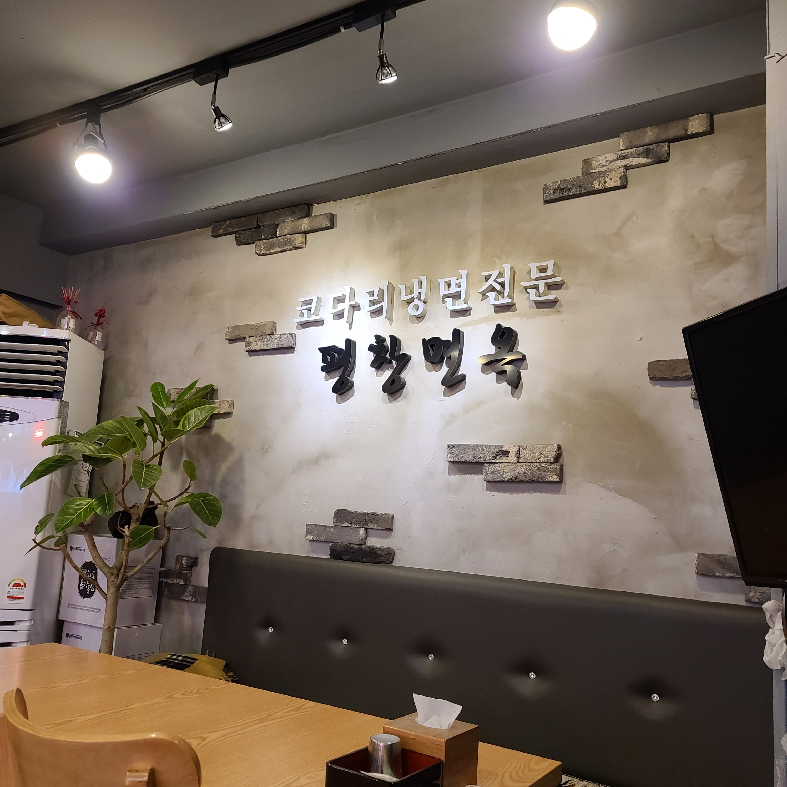
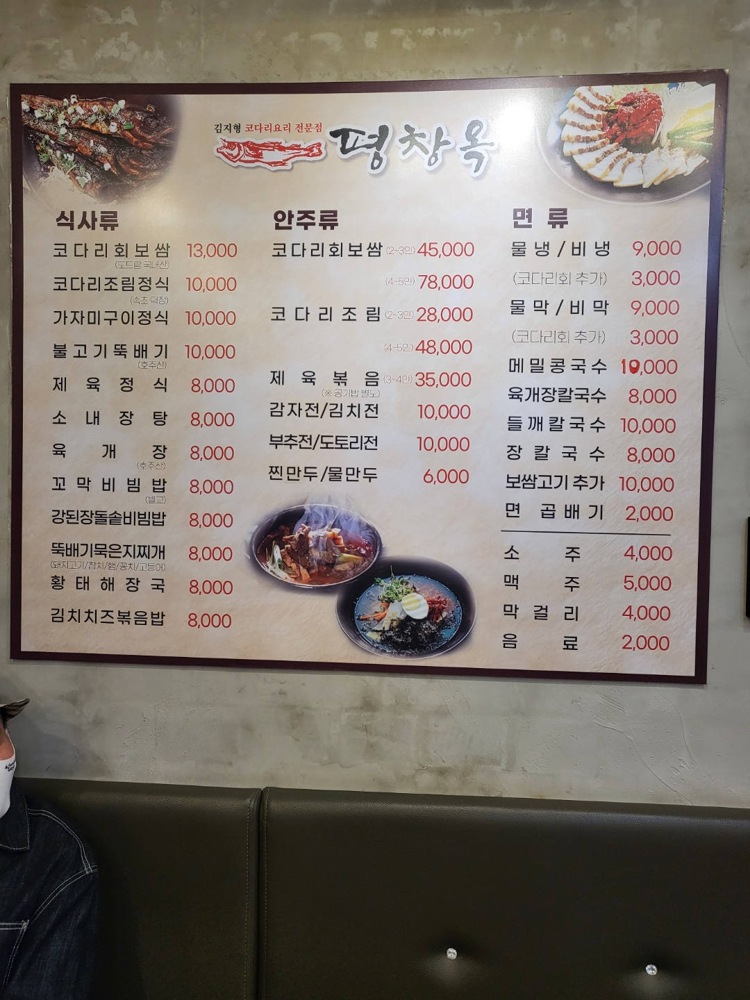

 
소개쾌활하신 김지형 사장님의 평창옥입니다. 매일 달라지는 밑반찬으로 점심식사에도 매우 좋습니다. 후회없을 코다리냉면, 코다리보쌈, 백반!! 꼭 맛보시고 가세요~
영업시간 평일:10:30~22:00 토요일:10:30~21:00 브레이크타임:15:00~16:00(평일만)
장소 7호선 신논현역 1번출구 <노브랜드버거>골목으로 들어오세요!!
전화번호 02-3444-5333